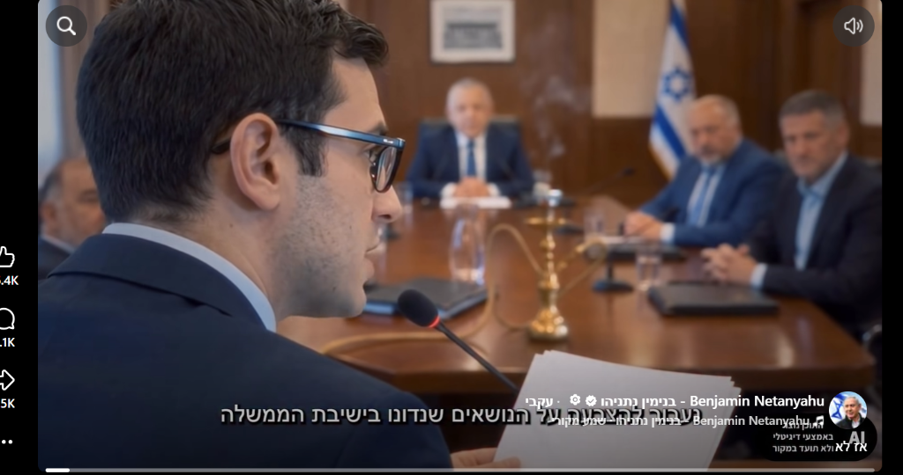
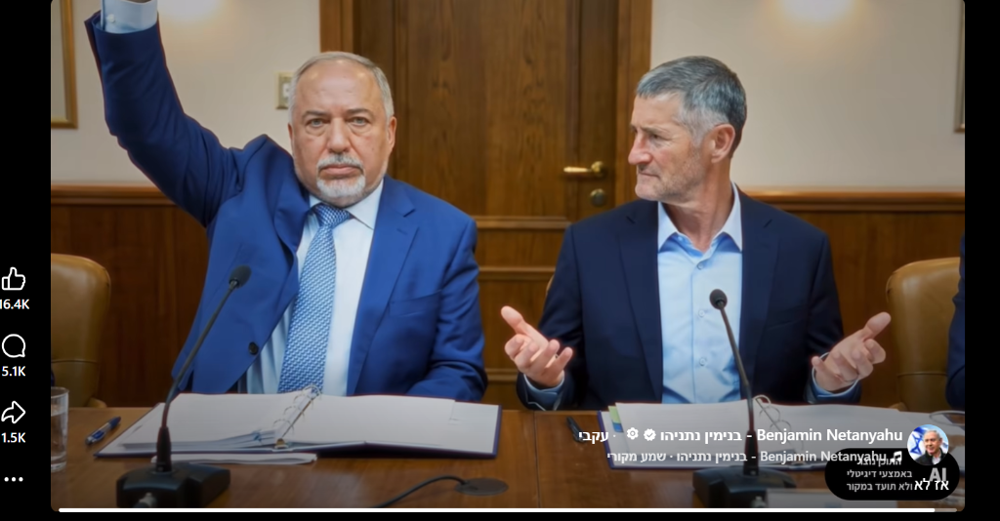
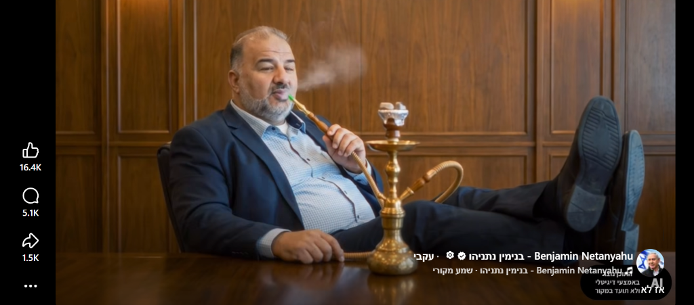

זהו סרטון ה-AI הוויראלי ביותר של מערכת הבחירות הנוכחית. הסרטון, שכותרתו הלקונית היא "אז לא", מתאר סימולציה ממוחשבת מלאה של ישיבת ממשלה עתידית בראשותו של גדי איזנקוט, כשלצידו יושב מנסור עבאס כמי שמנהל ומכתיב בפועל את החלטות המדינה.
בסרטון נראה איזנקוט מעלה שורה של החלטות לאומיות וביטחוניות (לחימה בטרור, סיכולים ממוקדים, בנייה בהתיישבות), כאשר בכל פעם מנסור עבאס פוסק בביטול: "לא". בסיום, כשאייזנקוט שואל על פינוי יישובים, עבאס עונה בחיוב, והסרטון נחתם בקריינות אזהרה מפני "ממשלת שמאל שנשענת על מועצת השורא והאחים המוסלמים".
המבנה הנרטיבי של הסרטון דרך שלוש סצנות מפתח

הסרטון בונה בהדרגה את תחושת אובדן השליטה הישראלית בדיוני הממשלה. הסצנה נפתחת בהצגת סדר היום של השרים, כאשר עצם נוכחותו של עבאס והנרגילה על שולחן הדיונים הרשמי מייצרת ניגוד חזותי חד שנועד להמחיש את אובדן הריבונות.

בסצנה השנייה מחדד הסרטון את השבר הפנימי בתוך האופוזיציה: מול ניסיונותיו של אביגדור ליברמן לדרוש תגובה צבאית תקיפה, ניצב יאיר גולן בהתנגדות. ההכרעה אינה נופלת בידי יו"ר הישיבה איזנקוט, אלא בידיו של עבאס, שמכריע נגד העמדה הביטחונית ומבטל את דרישת הימין-מרכז.

נתוני החשיפה ועלויות ההפקה
לסרטון יש עד כה 9.8 מיליון צפיות (Plays) והוא מחזיק בשיא הצפיות של התקופה האחרונה ברשתות החברתיות בכל הנושאים. מטרת הסרטון היא לבלום זליגת קולות של מצביעי ימין-מרכז לעבר איזנקוט והמחנה הממלכתי, באמצעות החייאת תבנית ההרתעה המוכרת של ממשלה הנשענת על המפלגות הערביות.
לפי הערכתנו, עלות הפקתו – הכוללת אימון מודלי פנים מותאמים אישית (LoRA), שמירה על עקביות תווי הפנים של מספר מנהיגים פוליטיים לאורך 75 שניות, סנכרון שפתיים מלא (Lip-sync), קריינות אולפן מקצועית ועריכת פוסט-פרודקשן – עלתה למשלם המסים הישראלי (במסגרת מימון מפלגות) בין 30,000 ש"ח ל-50,000 ש"ח.
אין ספק שיוצרי הסרט הפיקו סרטון AI באיכות גבוהה, שמצליח להעביר את מסרי הליכוד בדיוק חזותי חד. אך השאלה המחקרית היא: האם המסר נקלט או נדחה, ואולי אף פעל בדרך הפוכה לרצון יוצריו?
איך ניגשים לבחון זאת?
מספר הצפיות העצום (9.8 מיליון) משקף בראש ובראשונה את כוחו של אלגוריתם מטא, שקיבע את הסרטון בראש נגן הרילס במשך 19 ימים רצופים. אך בדיקת עומק של השפעת המסר מחייבת צלילה אל המיקרו-דאטה: ניתוח עמדות המגיבים, פילוח שמות המשפחה באמצעות מנוע האונומסטיקה המערכתי, ובחינת "הקהל השקט" – אותם משתמשים שאינם כותבים תגובה בעצמם, אך מחלקים לייקים ומכריעים אילו תגובות יקבלו הד ציבורי.
בניגוד לפוסטים פוליטיים רגילים בישראל (בהם שיעור השמות הזרים נע בין 10% ל-14%), הוויראליות העולמית של הסרטון משכה נפח חריג של 346 מגיבים לא-ישראליים (26.4% מכלל המגיבים) האחראים על 447 תגובות (24.4% מנפח השיח). מדובר בבוטים בינלאומיים, תעמולה פרו-פלסטינית באנגלית ובספרדית, ומשתמשי אינסטגרם זרים שנחשפו לסרטון בנגן הגלובלי. כדי לקבל תמונת אמת על דעת הקהל המקומית – נוטרלה שכבה זרה זו, והניתוח האונומסטי להלן מתמקד אך ורק בציבור הישראלי המזוהה (967 מגיבים ייחודיים ו-1,382 תגובות).
הפילוח האונומסטי של הציבור הישראלי (ללא נוכחות זרה)
פילוח שמות המשפחה של המגיבים הישראליים המזוהים מעמיד תמונה דמוגרפית ופוליטית מובהקת:
| קטגוריה אונומסטית (ציבור ישראלי בלבד) | מגיבים ייחודיים (N=967) | נפח תגובות (N=1,382) | משקל והדהוד: לייקים (N=295) | אחוז תמיכה בריל מתוך בעלי העמדה |
|---|---|---|---|---|
| ספרדי / עות'מאני (מזרחי) | 33.7% (326 מגיבים) | 26.9% (372 תגובות) | 34.6% (102 לייקים) | 37.2% תמיכה (62.8% התנגדות) |
| אשכנזי / אירופי | 23.3% (225 מגיבים) | 37.6% (519 תגובות - הטיית נפח) | 28.5% (84 לייקים) | 16.0% תמיכה (84.0% התנגדות) |
| עברי-ישראלי (שמות מחודשים) | 15.3% (148 מגיבים) | 12.4% (172 תגובות) | 24.7% (73 לייקים) | 21.4% תמיכה (78.6% התנגדות) |
| כינוי / פרופיל פיקטיבי | 11.0% (106 מגיבים) | 9.2% (127 תגובות) | 1.4% (4 לייקים) | — (אמינות נמוכה) |
| ערבי / מזרח-תיכוני (אזרחי ישראל) | 9.0% (87 מגיבים) | 7.6% (105 תגובות) | 4.7% (14 לייקים) | — (ביקורת על השימוש בעבאס) |
| יוצאי ברה"מ (FSU) | 7.8% (75 מגיבים) | 6.3% (87 תגובות) | 6.1% (18 לייקים) | — (התפלגות מפוצלת) |
מה חושף הקהל השקט שמאחורי הלייקים של הישראלים?
מתוך 1,382 תגובות של ישראלים, הצטברו **295 לייקים בלבד** (88.6% מסך הלייקים בריל). למעלה מ-**93% מהתגובות נותרו עם 0 לייקים**, נתון המעיד על כך שרוב התגובות נבלעות בשיטפון. אולם התגובות הבודדות שזכו להדהוד ולתמיכת הקהל הישראלי הצביעו על שלוש תופעות מרכזיות:
- ההובלה של המגזר המזרחי והעברי במשקל הלייקים: מגיבים בעלי שמות מזרחיים ועבריים-ישראליים גרפו יחד כ-**59.3% מכלל הלייקים** שהוענקו לתגובות ישראליות (175 מתוך 295 לייקים). זהו האגף הדומיננטי ביותר מבחינת מעורבות והזדהות הקוראים.
- שבירת הבייס המסורתי: אפילו בקרב המגיבים ממוצא מזרחי (קהל הליבה האלקטורלי של הליכוד), **62.8% מבעלי הדעה הביעו אכזבה והתנגדות לסרטון**, מול 37.2% תמיכה בלבד. בקרב אשכנזים, ההתנגדות זינקה ל-84.0%.
- זעם משרתי המילואים ופרדוקס עבאס: התגובות שקיבלו את מספר הלייקים הגבוה ביותר (בראשן תגובות של 8–10 לייקים) לא היו הצהרות תמיכה, אלא זעקה של אנשי מילואים על סדרי העדיפויות השלטוניים, לצד תזכורות היסטוריות למשא ומתן שניהל נתניהו עצמו עם רע"מ.
- חטיפת התבנית הרטורית: הגולשים הפכו את סיסמת הסרטון נגד ראש הממשלה: "מי בעד לקחת אחריות על מחדל 7 באוקטובר? אז לא", "מי בעד ועדת חקירה ממלכתית? אז לא".
שאלת השכנוע הפתוחה: רציונל מול תת-מודע בעידן ה-AI
ניתוח הנתונים מעלה הבחנה חיונית בין שתי רמות השפעה:
ברמת השכנוע הרציונלי (Rational Persuasion): זה המבוסס על טיעונים, עובדות ודיון מודע – הסרטון נתקל בחומה של דחייה וביקורת. הגולשים פירקו את הנרטיב, הצביעו על הסתירות, וזעמו על הבריחה למחוזות הפיקציה.
אך מה לגבי ההשפעה על התת-מודע? כאן התשובה אינה ברורה כלל.
האם מיליוני האנשים שצפו בסרטון, והבינו היטב שמדובר בסרטון AI מומצא ושקרי, אך כזה שמתכתב עם תחושות הבטן והפחדים העמוקים שלהם – חוו בכל זאת חיזוק והטמעה של המסר? קשה מאוד לדעת.
חשוב לזכור: אנו נמצאים רק בראשיתו של עידן שבו סרטוני Deepfake ובינה מלאכותית מציפים את המרחב הציבורי. היכולת של דימוי ויזואלי מומצא לחלחל אל תת-ההכרה של קהל פסיבי עצום – גם כשהשכל מזהה שמדובר בזיוף – היא תחום חדש שהשפעתו הפוליטית והפסיכולוגית טרם נחקרה עד תום.